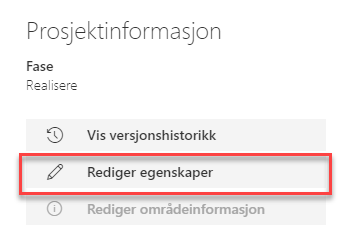
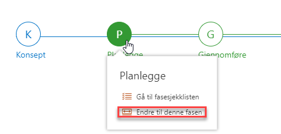

1) Det første du bør gjøre er å redigere egenskapene til prosjektet og fylle inn relevant prosjektinformasjon ved å trykke på Rediger egenskaper i feltet Prosjektinformasjon

2) Fyll ut feltene med relevant informasjon om prosjektet. Legg merke til at noen av feltene har en stjerne ved navnet. Disse er obligatoriske å fylle ut, og du får ikke lagret prosjektinformasjonen før det er gjort.
3) Gå til bunnen av siden og trykk på Lagre når du er ferdig med å fylle inn informasjon. Denne informasjonen bør vedlikeholdes underveis i prosjektet. Denne informasjon vedlikeholdes i prosjektet og er synlig på porteføljenivå for de som har tilgang til prosjektet.
4) Velg deretter hvilken fase prosjektet befinner seg i ved å peke over ønsket fase i faseviseren og trykke på Endre til denne fasen

5) Når fase er valgt vil man bare se dokumenter som er knyttet opp mot den gjeldende fasen.